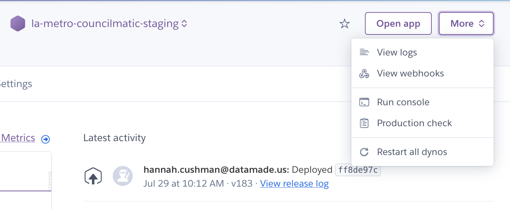
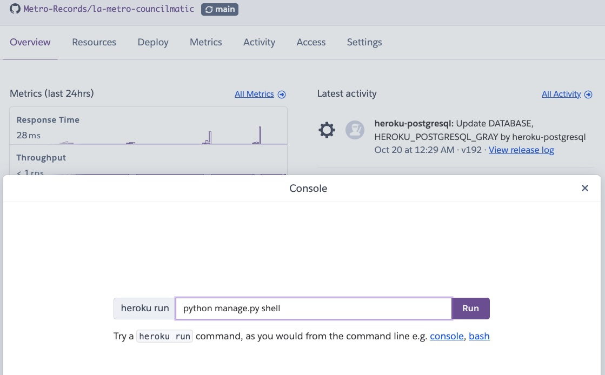

Deployment
DataMade hosts a staging version and production version of Metro Councilmatic.
Both sites - as well as review apps for active PRs - can be found in the corresponding Heroku pipeline. Metro developers should be able to shell into these servers, (e.g., for executing management commands). If you cannot, then talk to your friendly DataMade devops team.
Patterns and practices
Triggering a Metro deployment follows the typical DataMade pattern: merging or pushing to main deploys to the staging site, and pushing changes from main to deploy deploys to the production site.
The Metro deployment script runs a few steps for the production and staging environments - but not the review apps. It will apply any new migrations, create any missing cache tables, load in shapes of districts, and clear the site-wide cache.
These steps are not run for review apps because those use the staging environment’s database. This is a deviation from most of DataMade’s other Heroku pipelines. This gives us access to review apps without having to run lengthy scrapes each time we’d like to test a change of any size! However, this does also mean that any PRs that include a modification to the database will need to be tested locally instead of on those apps.
Working in Heroku
At times, we’ll need to shell directly into these deployed environments to investigate or manipulate the data within. Luckily, heroku provides us with a couple options for how to interact with them - the console on the site and the CLI.
Using the Site Console
To shell into the environment using the site console, click the Run Console link: 
And then enter your command as normal. In this case, we’re running python manage.py shell: 
Using the CLI
To shell in using your terminal, first make sure the Heroku CLI is installed then run the following commands, replacing <ENVIRONMENT_NAME> with your chosen environment (la-metro-councilmatic-staging for staging, and la-metro-councilmatic-prod for production).
>>> heroku login
heroku: Press any key to open up the browser to login or q to exit:
Opening browser to https://cli-auth.heroku.com/...
Logging in... done
Logged in as <your_email>
>>> heroku run -a <ENVIRONMENT_NAME> python manage.py shell
Running python manage.py shell on ⬢ <ENVIRONMENT_NAME>... up, run.####
...
Type "help", "copyright", "credits" or "license" for more information.
(InteractiveConsole)
>>> |Inspecting Data
View an entity in the Councilmatic database
Use the slug of the problematic Bill, Event, Person, or Committee
Every detail page is accessed in the browser using a slug. Let’s walk through an example. Visit the page for the October 2024 Executive Management Committee meeting, and check the address bar for the slug (the portion after the entity type, “event” in this case). We can see that the slug for this meeting is executive-management-committee-8a0e5d3ba5e2.
Retrieve the entity in the Django shell
Shell into a running instance of LA Metro Councilmatic using either the CLI or the web-based console. Then retrieve the problematic entity using its slug:
# In the Django shell
>>> from lametro.models import *
>>> entity = LAMetroEvent.objects.get(slug='executive-management-committee-8a0e5d3ba5e2')You can use the same ORM query to retrieve any entity. Simply swap out LAMetroEvent for the correct model and, of course, update the slug.
| Entity | Model |
|---|---|
| Person | LAMetroPerson |
| Committee | LAMetroOrganization |
| Bill | LAMetroBill |
| Event | LAMetroEvent |
View useful information
Assuming you have retrieved the entity as illustrated in the previous step, you can view its last updated date like this:
>>> entity.updated_at
datetime.datetime(2020, 3, 25, 0, 47, 3, 471572, tzinfo=<UTC>)You can also view its sources like this:
>>> import pprint
>>> pprint.pprint([(source.note, source.url) for source in entity.sources.all()])
[('api', 'http://webapi.legistar.com/v1/metro/events/1384'),
('api (sap)', 'http://webapi.legistar.com/v1/metro/events/1493'),
('web',
'https://metro.legistar.com/MeetingDetail.aspx?LEGID=1384&GID=557&G=A5FAA737-A54D-4A6C-B1E8-FF70F765FA94'),
('web (sap)',
'https://metro.legistar.com/MeetingDetail.aspx?LEGID=1493&GID=557&G=A5FAA737-A54D-4A6C-B1E8-FF70F765FA94')]Events have Spanish language sources (e.g., “api (sap)”), as well. In initial debugging, focus on the “api” and “web” sources – by visiting these links and checking that the data in Legistar appears as expected.
Pro-tip: If you are using iTerm2 on a Mac, hold down the command key to convert URLs into hyperlinks. Saved you a copy/paste!